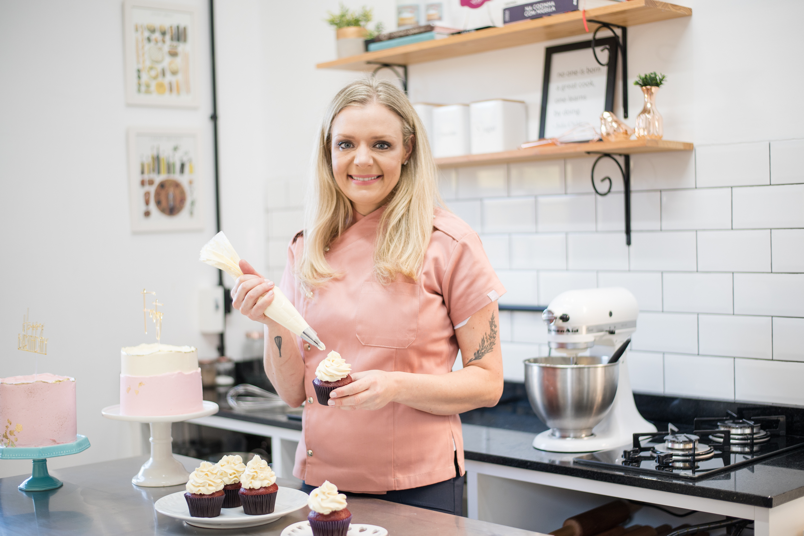
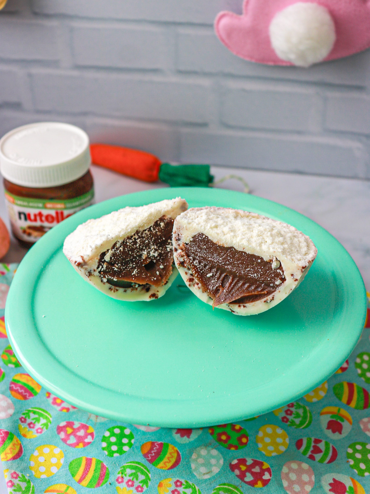
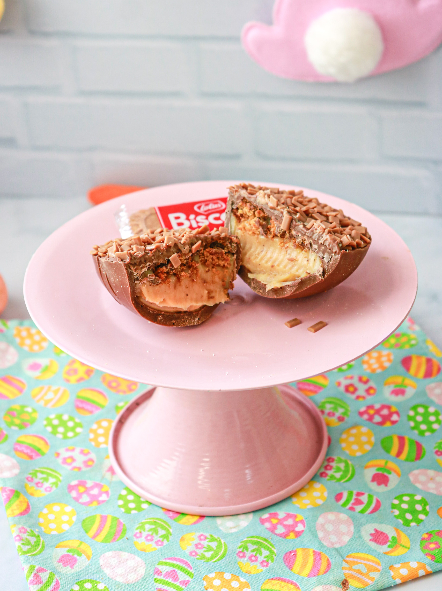
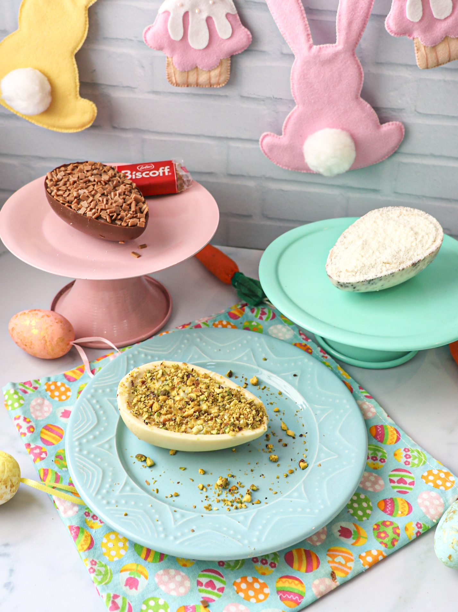

Mini de colher
Pistache
Chocolate branco com recheio de pasta de pistache e finalização com pistache.

Coleção de Páscoa
Sabores, texturas e delicadeza em uma coleção pensada com carinho.
Minis de colher, ovos de colher e ovos trufados apresentados como uma vitrine sazonal da marca, revelando a assinatura da Manu Rosa Bakery com elegância e leveza.

Uma coleção com assinatura
Fiz minha especialização na França e fui vencedora do reality show Que Seja Doce, no GNT. Hoje, à frente da Manu Rosa Bakery, preparo bolos, doces e também ministro cursos na área da confeitaria.
A cozinha é a minha paixão, e cada coleção nasce do desejo de transformar datas especiais em experiências doces, bonitas e memoráveis. Nesta vitrine de Páscoa, reuni criações que traduzem minha assinatura autoral com delicadeza, técnica e carinho.
Mais do que uma seleção sazonal, esta coleção representa o jeito como a marca celebra sabor, textura e apresentação em cada detalhe.
Coleção 01
Pequenos no tamanho, mas ricos em presença visual, textura e delicadeza.
Mini de colher
Chocolate branco com recheio de pasta de pistache e finalização com pistache.

Mini de colher
Chocolate branco cookies and cream com recheio de brigadeiro de Nutella e cobertura de leite ninho.

Mini de colher
Chocolate ao leite com recheio de pasta de speculoos e finalização com granule de caramelo.
Composição da coleção
Os minis de colher revelam a leveza da coleção em criações pequenas no formato, mas ricas em textura, sabor e apresentação.

Coleção 02
Os sabores centrais da coleção, com volume, textura e uma apresentação marcante.

Ovo de colher
Casca de cookie com recheio de brigadeiro de Nutella, finalizada com três mini cookies e granule ao leite.

Ovo de colher
Casca de chocolate ao leite com bolo chocolatudo, brigadeiro de chocolate e cobertura crunchy de chocolate.
Ovo de colher
Casca de chocolate ao leite, recheio de pasta de speculoos, brigadeiro de doce de leite Moça, crumble de speculoos e finalizado com Biscoff da Lotus.

Ovo de colher
Casca de chocolate ao leite com recheio de brigadeiro branco e morangos, finalizada com brigadeiro branco, brigadeiro de chocolate e morangos.
Coleção 03
Uma leitura mais clássica da coleção, com sabores intensos e acabamento refinado.

Ovo trufado
Ovo inteiro com casca de chocolate ao leite, recheado com pasta de pistache pura e finalizado com chocolate branco e pistache.

Ovo trufado
Ovo inteiro médio com casca ao leite e recheio de caramelo salgado, pensado para equilibrar dulçor e profundidade de sabor.
Assinatura da coleção
Os ovos trufados reforçam o lado mais clássico da coleção, com acabamento cuidadoso e uma leitura sofisticada da Páscoa.
.jpeg)
Sobre a coleção
Cada criação foi pensada para unir memória afetiva, técnica e acabamento, revelando a forma como a marca transforma datas especiais em experiências doces e memoráveis.
Para saber mais sobre encomendas sazonais, edições especiais ou disponibilidade futura, o contato pode ser feito diretamente com a Manu.
Combinações que equilibram conforto, textura e delicadeza em uma leitura sazonal da confeitaria.
Uma estética pensada para encantar visualmente e valorizar a experiência de quem presenteia e de quem recebe.
Coleções especiais desenvolvidas com olhar cuidadoso para a data, sempre alinhadas à identidade da marca.
Uma conversa próxima para edições especiais, futuras disponibilidades e criações sob encomenda.
Contato
Uma conversa direta para encomendas especiais, coleções futuras e projetos personalizados com a assinatura da Manu Rosa Bakery.